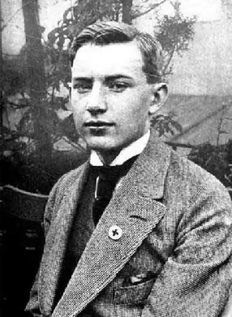

ІРЖІ ВОЛЬКЕР (JIŘÍ WOLKER. 1900-1924) — письменник, який належить до плеяди чеських майстрів слова, які створювали чеську революційну літературу.
Починаючи з 1920 р. він виступає як поет пролетаріату, з великою силою виражає його страждання і надії, волю до боротьби, і віру в перемогу. Волькер навчався на юридичному факультеті Празького університету; не закінчивши його, помер від туберкульозу. У юнацьких віршах Волькера (1916-1920) переважали патріотичні, пейзажні та інтимні мотиви. В період Першої світової війни, в умовах розрухи і робочих хвилювань, його увагу привернули соціальні контрасти життя. У 1921 р. він стає членом Комуністичної партії Чехословаччини. Перший збірник віршів "Гість на поріг" (1921) відобразив мрію поета про новому світі загальної любові і гармонії, хоча виражена вона була в абстрактно-символическойформе. Подією в літературному житті Чехословаччини став збірник віршів "Час народження". Волькер — тонкий лірик і майстер соціальної балади, стала у нього емоційною розповіддю про трагічні долі робітників. Основу віршів Волькера зазвичай становить один розгорнутий образ, розгалужена метафора. Велику роль у формуванні соціалістичної естетики в Чехословаччині зіграли статті Волькера: "Пролетарське мистецтво", "Захисники творчої свободи", "Маніфести", "Про майбуття літератури". Волькеру належать драматичні етюди
("Найбільша жертва" та ін), казки соціально-етичного змісту ("Казка про мільйонера, який вкрав сонце", "Казка про Іонізуючого-циркаче" та ін).Складність багатьох віршів Волькера, що мають переносне значення, полягає в тому, що в них як би паралельно розвиваються два образу, причому кожен відносно самостійно; це часом порушує безпосередні відповідності прямого і переносного сенсу. Яскравим прикладом може служити вірш "Ранкова пісня". Несміливе ранок в обличчя нам дихає мрією вільних лісів, лугів і далеких гір. Всі чудовою вірою вщухло в нашій душі, і кривава біль, і важкий протест. Радісні, спокійні, бредемо босі у холодить траві, через лісову галявину. Зелень сріблять сльози ранньої роси. Знати, плакали ми — але тепер хочемо жити. Там у кривавих туманах далина відчуває сонце Ви думаєте — воно не дістане сюди? О, тільки вірте — не вірте усією душею, своєю вірою ми і сонце закличемо. Година народження (Těžká hodina. 1922) — збірник, у якому об'єднані найбільш зрілі твори поета. У багатьох віршах Волькер використовує форму балади, поширену в чеській класичної поезії, але його героєм стає робітник. Вірші розповідають про трагічну долю робітника ("Балада про очах кочегара", "На рентгені"), кличуть його до боротьби ("Балада про сон"). Творам Волькера властива реалістична конкретність, ясність і в той же час трагічна напруженість і поетична сила бачення.